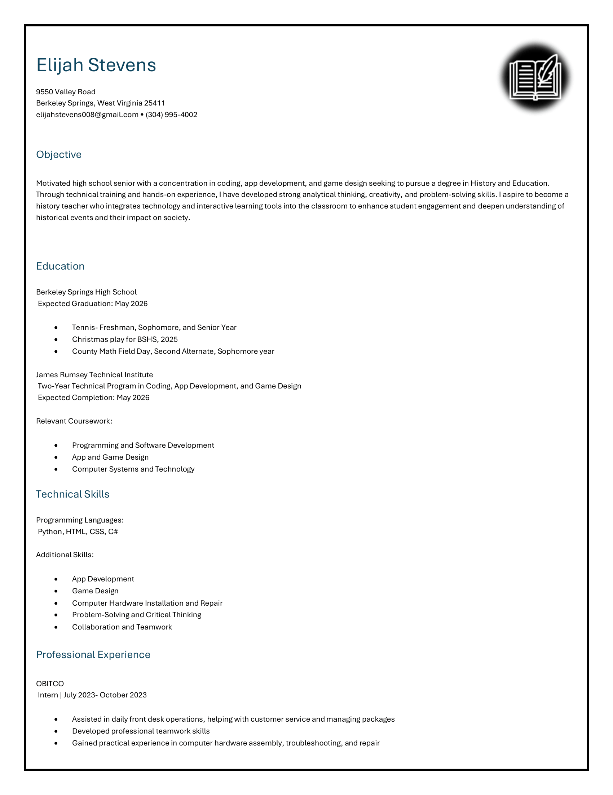

Click the resume to download.

Hello! My name is Elijah Stevens, and I am an 18-year-old student at James Rumsey Technical Institute. While I am currently studying Coding, App, and Game Design, I have developed a strong passion for history and education. My goal is to attend West Virginia University (WVU) and pursue a degree in education, focusing on becoming a history teacher.
I have developed skills such as communication, critical thinking, teamwork, and creativity. My background in technology has helped me become adaptable and comfortable using digital tools, which I plan to use in the classroom.